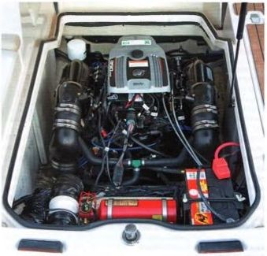
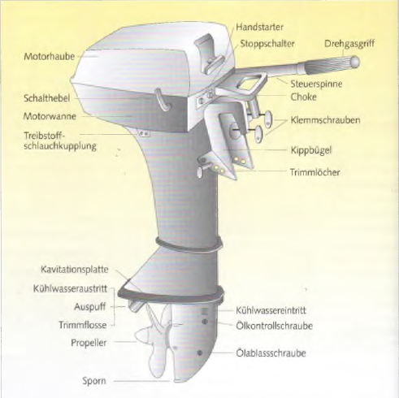

УСТРОЙСТВО ДВИГАТЕЛЕЙ
Бензиновый и дизельный двигатель
Среди лодочных двигателей различают бензиновые (двигатели Отто) и дизельные двигатели. Бензиновые двигатели
всасывают через карбюратор бензино‑воздушную смесь, которая воспламеняется электрической свечой зажигания.
Дизельные двигатели всасывают только воздух. При сильном сжатии он нагревается настолько, что впрыскиваемое
дизельное топливо самовоспламеняется. Поэтому у дизельного двигателя нет карбюратора и электрической системы
зажигания, а вместо этого используется топливный насос и форсунка.
- ► Преимущества дизеля: более высокая взрывобезопасность, меньшая требовательность к обслуживанию из‑за
меньшего количества чувствительных деталей, более долгий срок службы и меньший расход топлива.
- ► Недостатки дизеля: более высокая цена, больший вес и большие габариты установки по сравнению с бензиновым
двигателем той же мощности.
- ► Недостатки бензинового двигателя: постоянная опасность пожара и взрыва. Хотя при аккуратной установке
всей системы, включая топливный бак, этот риск можно значительно снизить.

Важно для машинного отделения: хороший доступ для проверки и обслуживания.
Двухтактные и четырехтактные двигатели
Среди бензиновых двигателей различают двухтактные и четырехтактные. Сегодня двухтактные двигатели встречаются в
основном только на рынке подержанной техники, поскольку при новых регистрациях они больше не соответствуют нормам по
выбросам.
Проще говоря, чтобы поршень в цилиндре двигался, требуется четыре рабочих такта. Бензино‑воздушная смесь должна
быть всосана, сжата, сгореть и затем отработанные газы должны быть удалены. В четырехтактном двигателе поршень для
этого делает четыре хода — вниз‑вверх‑вниз‑вверх. В двухтактном двигателе для той же работы требуется только два
хода — вниз‑вверх. Основное различие:
- ► Двухтактные двигатели работают на смеси бензина и масла, которая обеспечивает смазку.
- ► Четырехтактные двигатели сжигают чистый бензин. Масло находится в отдельном картере и подается масляным
насосом ко всем смазываемым деталям. Для четырехтактных двигателей требуется контроль уровня масла и
периодическая его замена.
- ► Преимущества двухтактного двигателя: меньшие габариты и вес, большая мощность при одинаковом рабочем
объеме.
- ► Преимущества четырехтактного двигателя: меньший расход бензина и масла, оптимальная смазка двигателя,
более тихая работа и меньший вред для окружающей среды.
Части подвесного мотора

- Motorhaube - Кожух двигателя
- Handstarter - Ручной стартер
- Steuerspinne - Рукоятка управления
- Drehgasgriff - ручка газа
- Schalthebel - Рычаг переключения
- Treibstoff schlauchkupplung - Топливный шланг с соединением
- Choke - выключатель
- Klemmschrauben - Зажимные винты
- Kippbuegel - Скоба наклона
- Trimmloecher - Отверстия для наклона
- Kühlwassereintritt - Вход охлаждающей воды
- Ölablassschraube - Сливная пробка масла
- Ölkontrolschraube - Контрольный винт масла
- Auspuff - выхлопная труба
- Kavitationsplatte - Антикавитационная плита
- Propeller - Гребной винт
- Sporn - киль
Назад Оглавление Вперед